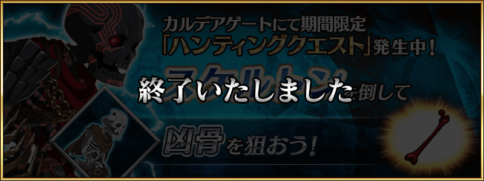
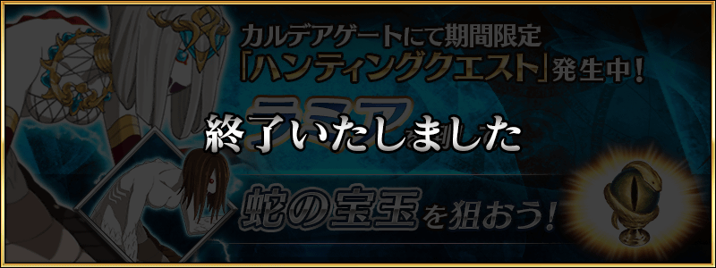
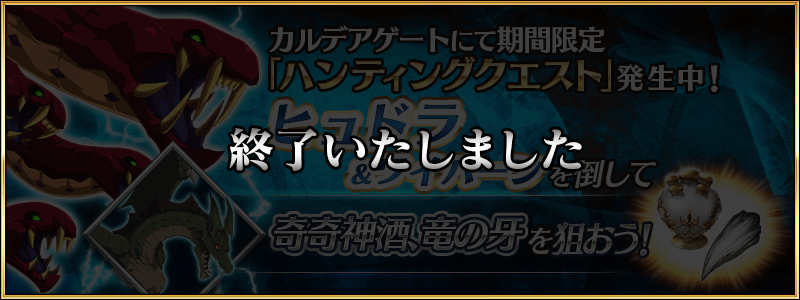
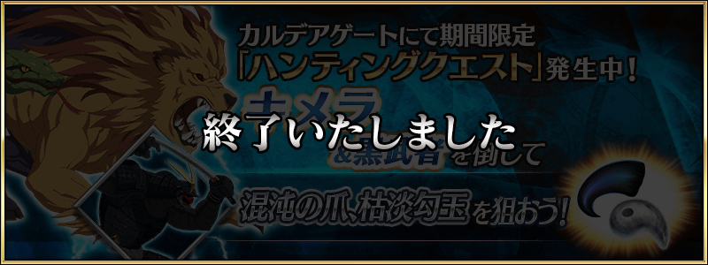
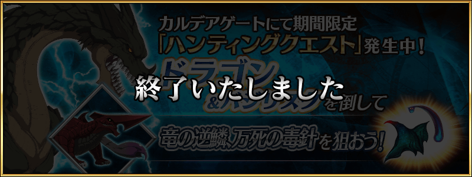

◆舉辦期間◆
2018年5月30日(三) 17:00～6月6日(三) 11:59
◆活動概要◆
容易取得特定的技能強化＆靈基再臨素材的關卡「狩獵關卡」！
舉辦期間中，特定的敵人做為對象的狩獵關卡依序在迦勒底之門出現。
關卡有3階段難易度的設定，在各自的期間內皆能無數次挑戰。
另外，可獲得魔力稜鏡做為關卡通過報酬。
挑戰關卡以獲得技能強化＆靈基再臨素材做為目標吧！
◆參加條件◆
所有的Master對象
※新Master必須推進通過至「特異點F 炎上汙染都市 冬木 第3節」。
6月4日(一) 17:00～6月6日(三) 11:59
5月30日(三) 17:00～5月31日(四) 16:59

5月31日(四) 17:00～6月1日(五) 16:59

6月1日(五) 17:00～6月2日(六) 16:59

6月2日(六) 17:00～6月3日(日) 16:59

6月3日(日) 17:00～6月4日(一) 16:59
